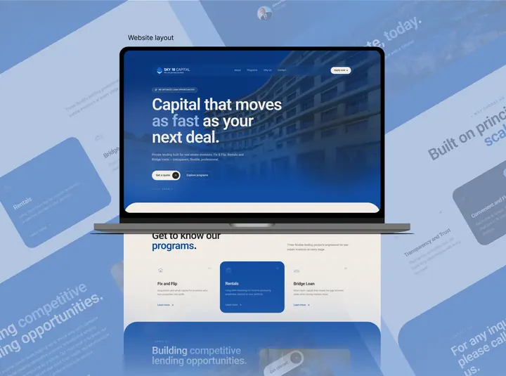
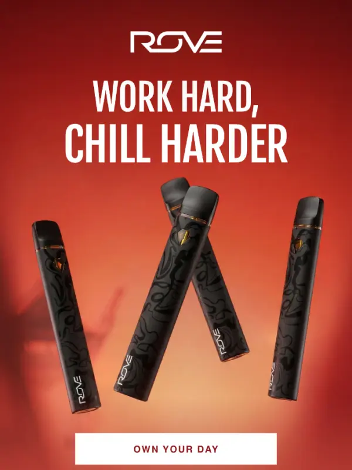
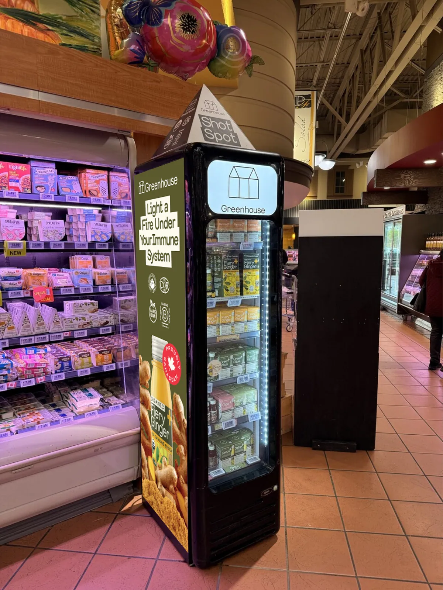
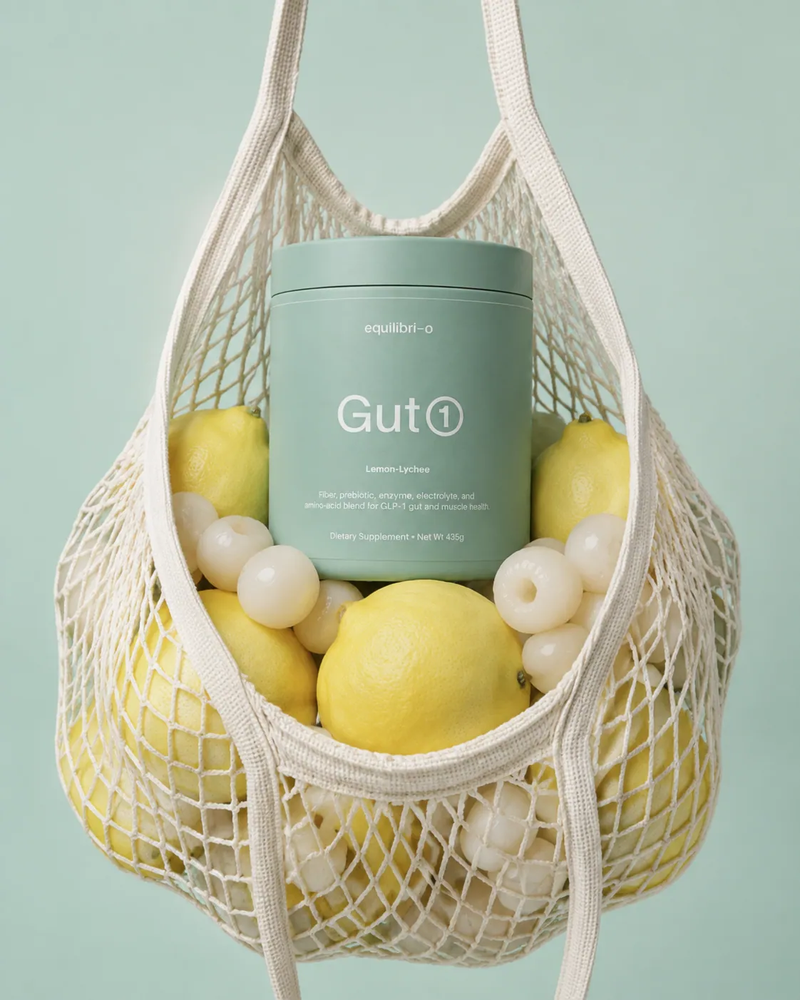

I turn brand systems into ready-to-launch work: campaign creative that ships on time, on brand and at the right spec, across every format and channel.
The work
I'm creating



About me
Production designer with 10+ years building campaigns for agencies in New York and Los Angeles, across beauty, wellness, CPG and finance. I carry one idea across every placement, size and channel without letting it drift.
Most of my work lives inside brand systems I didn't write. I read them well enough to extend them, and I know which rules bend and which ones hold.

The work
I'm creating
Campaign Ecosystem · 2025-2026
38pieces
One immunity platform carried from the feed to the grocery aisle.
Read the case studyIncludes · 9 formats
- Paid social and display
- Shoppable and banner video
- Free-standing retail displays
- Cooler wraps and shelf blades
- Print dielines
Brands &
results
- Pieces shipped
- 0
- Projects
- 0
- Brands
- 0
- Years in production
- 0+
Zillow / Greenhouse / Rove / Ben Bridge Jeweler / Sky 18 Capital / equilibri-o / Vysen / Spartan / Generac / Organic India / BBQGuys / Capri Tools / Wink / Alpha Lion / The Sports Edit / SNOW / Pure Genius / Finding Ferdinand / Songer / Golden Hour Hemp / Cheers / GelMoment / CNE / Doctronic / IDUNA / il'argento / Polar Monkeys / Café Café / Manara / Trace AI / Orbitoshift / Avenue / Wyne / NOLE / Carevio / Villa Stari Mlin / Morelia Gourmet Paletas / Adapt Cafe / easynerdy / The Blaze BZ3 / Pro Performance MD / Ananda Beauty Spot / Cosmédica / Dra. Nancy Valdés / CompressionSale
More than a decade turning brand systems into production-ready work.
-
2022 - 2026
GAS Group
Marketing Designer
Led creative production for up to eight accounts a month: weekly social and email, 50+ web banners, print, retail and packaging.
-
2023 - 2026
Flowium
Graphic Designer, contract
Designed 8 to 15 Klaviyo emails a day for ecommerce brands, using heatmaps and campaign KPIs to shape hierarchy and conversion.
-
2022 - 2023
Coalition Technologies
Marketing Designer
Built a modular Klaviyo production system across multiple brands and extended one design system to 6 to 8 SKUs, dielines included.
-
2019 - 2022
Teleperformance
Creative Content Coordinator
Led B2B sales enablement, event branding and immersive client-facing environments.
-
2017 - 2019
Svelte Media Inc.
Creative Designer
Designed direct-response landing pages and organic social content for a wellness ecommerce business.
-
2015 - 2016
Conduent
Brand Manager
Managed internal brand programs, executive communication and editorial assets across stakeholder groups.
-
2014 - 2015
Revista Escaparate
Editorial Designer
Editorial design and art direction for a fashion magazine: covers, layouts, photo shoots and the brand system behind them.
-
2013 - 2014
Rio da Prata
Marketing and Communications Manager
Led organic social strategy and communications for a tourism destination in Brazil.